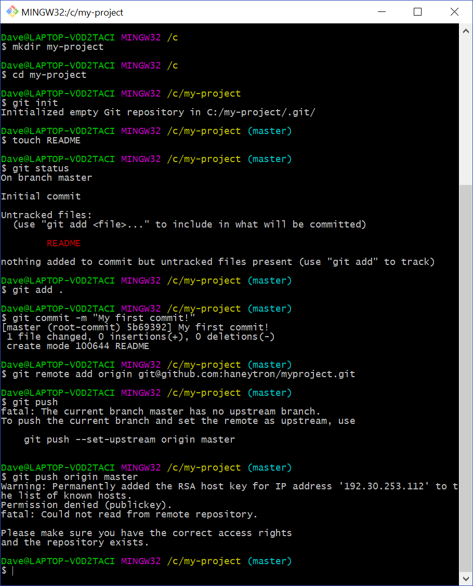
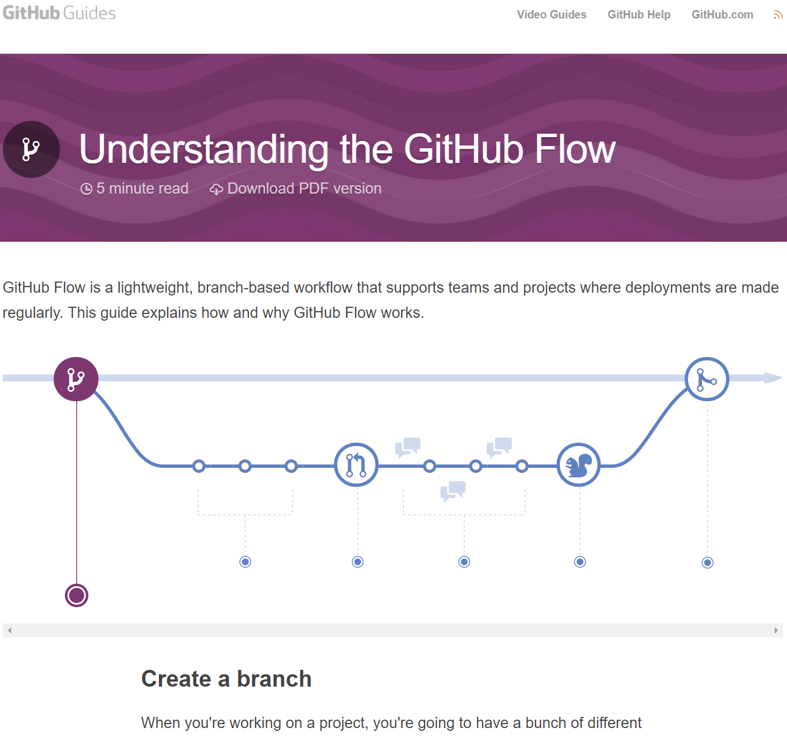

Git Fundamentals
David Haney | @haneytron
About Me
Engineering Manager at Stack Overflow
Programming since 1991-ish, for $$$ since 2008
Graduated 2008 @ 15th best school in Canada ...out of 16
Perhaps You've Heard Of Us!
We help developers all over the world solve problems
Learn, Share, Build Your Career
Git (noun):
A version control system for tracking changes in computer files and coordinating work on those files among multiple people.
Also a totally confusing and intimidating pain in the ___.
Who Cares?
YOU DO!
- Backups of your code
- Able to recover from disaster
- Easily(ish) collaborate on same code
- Everyone in the industry uses it
- Makes you more valuable to employers
Git Is a Time Travel Machine
- Mark the current state of time (commit) of the code now
- Mark future times with commit every time you do something new
- Can travel back in time to any commit marker at any time
- Can travel forward in time to current commit marker too
Also a Multiverse Device
- The master branch is our "universe"
- Can create "parallel universe" branch from any commit
- Do work in parallel branch (to avoid disrupting master)
- Update branch from master (keep universes in sync)
- Fold branch into master (called a merge) when done
NOTE: can also branch from branches if you like pain
Get Git Installed
https://git-scm.com/downloads (actual Git app)
- The real app, a command-line interface (CLI)
- Runs in a bash terminal (even on Windows)
- Not user-friendly but you'll learn tons vs GUI
https://git-scm.com/downloads/guis (3rd party GUIs)
- Abstraction over CLI, core concepts hidden
- User-friendly visual interface
- Recommend GitHub Desktop (Mac & Win)
Core Git Concepts
- Init
- Status
- Stage
- Commit
- Log
- Revert
- Remote
- Pull
- Push
- Checkout / Branch
- Merge
Init
Used to initialize a folder as a Git repository
git init
Status
Get the current status of your repository
git status
Stage
The "staging platform" for changes before you commit them
git add|rm <filename>|.|--all
Commit
Creates a "snapshot" in time of the code
git commit -m "<message>"
Log
Browse the history of commits
git log
Revert
Undoes a commit (when you screw up)
git revert --no-edit <commit hash>
Remote
Defines remote repo for local repo to sync with
git remote add origin git@github.com:<username>/<project>.git
- Remote required to share work with others
- GitHub == your remote!
Pull
Pulls new remote commits & merges into local branch
git pull
- Sometimes requires password / key, but not on public GitHub
- Sometimes you'll have merge conflicts to solve

Push
Pushes new local commits into remote branch
git push
- Always requires password / key (tutorial)
- Sometimes you'll have merge conflicts to solve
Checkout / Branch
Switch between local branches
Also create new local branch from current branch
git checkout [-b] <branch name>
Merge
Merge a named branch into the current branch
git merge [--squash] <branch name>
- Will try to fast-forward time (replay commits w/o conflicts)
- When cannot fast-forward, creates a merge commit
Create Your 1st GitHub Repo
Sign up for GitHub
Gen & add SSH key (tutorial)
Create your first empty remote repo (tutorial)
Push Your First Commit!
Recommended Workflow
Hope You Learned Something!
The End
https://www.davidhaney.io/pres/git
David Haney | @haneytron